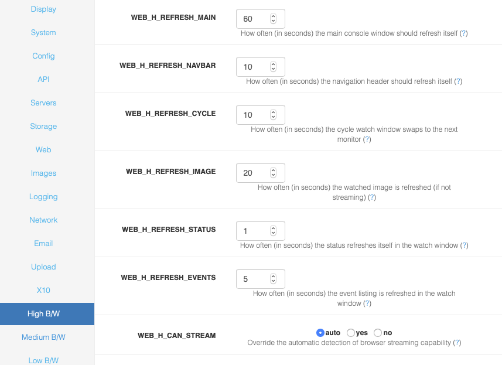

Options - High, Medium and Low B/W
There are a number of options that are grouped into bandwidth categories, this allows you to configure the ZoneMinder client to work optimally over the various access methods you might to access the client. You may want to use different modes depending on your network to preserve bandwidth.
A partial screenshot is shown below:
The following options are available in H, M and L options. These 3 groups control what happens when the client is running in ‘high’, ‘medium’ and ‘low’ bandwidth mode respectively. In most cases the default values will be suitable as a starting point.
High - You should set these options for when accessing the ZoneMinder client over a local network or high speed link.
Medium - You should set these options for when accessing the ZoneMinder client over a slower cable or DSL link.
Slow - You should set these options for when accessing Zoneminder client over a slow network link.
WEB_H_REFRESH_MAIN, WEB_M_REFRESH_MAIN, WEB_L_REFRESH_MAIN - How often (in seconds) the main console window should refresh itself. The main console window lists a general status and the event totals for all monitors. This is not a trivial task and should not be repeated too frequently or it may affect the performance of the rest of the system.
WEB_H_REFRESH_CYCLE, WEB_M_REFRESH_CYCLE, WEB_L_REFRESH_CYCLE - How often (in seconds) the cycle watch window swaps to the next monitor. The cycle watch window is a method of continuously cycling between images from all of your monitors. This option determines how often to refresh with a new image.
WEB_H_REFRESH_IMAGE, WEB_M_REFRESH_IMAGE, WEB_L_REFRESH_IMAGE - How often (in seconds) the watched image is refreshed (if not streaming). The live images from a monitor can be viewed in either streamed or stills mode. This option determines how often a stills image is refreshed, it has no effect if streaming is selected.
WEB_H_REFRESH_STATUS, WEB_M_REFRESH_STATUS, WEB_L_REFRESH_STATUS - How often (in seconds) the status refreshes itself in the watch window. The monitor window is actually made from several frames. The one in the middle merely contains a monitor status which needs to refresh fairly frequently to give a true indication. This option determines that frequency.
WEB_H_REFRESH_EVENTS, WEB_M_REFRESH_EVENTS, WEB_L_REFRESH_EVENTS - How often (in seconds) the event listing is refreshed in the watch window. The monitor window is actually made from several frames. The lower framme contains a listing of the last few events for easy access. This option determines how often this is refreshed.
WEB_H_CAN_STREAM, WEB_M_CAN_STREAM, WEB_L_CAN_STREAM - If you know that your browser can handle image streams of the type ‘multipart/x-mixed-replace’ but ZoneMinder does not detect this correctly you can set this option to ensure that the stream is delivered with or without the use of the Cambozola plugin. Selecting ‘yes’ will tell ZoneMinder that your browser can handle the streams nativ
WEB_H_STREAM_METHOD, WEB_M_STREAM_METHOD, WEB_H_STREAM_METHOD - ZoneMinder can be configured to use either mpeg encoded video or a series or still jpeg images when sending video streams. This option defines which is used. If you choose mpeg you should ensure that you have the appropriate plugins available on your browser whereas choosing jpeg will work natively on Mozilla and related browsers and with a Java applet on Internet Explorer
WEB_H_DEFAULT_SCALE, WEB_M_DEFAULT_SCALE, WEB_L_DEFAULT_SCALE - Normally ZoneMinder will display ‘live’ or ‘event’ streams in their native size. However if you have monitors with large dimensions or a slow link you may prefer to reduce this size, alternatively for small monitors you can enlarge it. This options lets you specify what the default scaling factor will be. It is expressed as a percentage so 100 is normal size, 200 is double size etc.
WEB_H_DEFAULT_RATE, WEB_M_DEFAULT_RATE, WEB_L_DEFAULT_RATE - Normally ZoneMinder will display ‘event’ streams at their native rate, i.e. as close to real-time as possible. However if you have long events it is often convenient to replay them at a faster rate for review. This option lets you specify what the default replay rate will be. It is expressed as a percentage so 100 is normal rate, 200 is double speed etc.
WEB_H_VIDEO_BITRATE, WEB_M_VIDEO_BITRATE, WEB_L_VIDEO_BITRATE - When encoding real video via the ffmpeg library a bit rate can be specified which roughly corresponds to the available bandwidth used for the stream. This setting effectively corresponds to a ‘quality’ setting for the video. A low value will result in a blocky image whereas a high value will produce a clearer view. Note that this setting does not control the frame rate of the video however the quality of the video produced is affected both by this setting and the frame rate that the video is produced at. A higher frame rate at a particular bit rate result in individual frames being at a lower quality.
WEB_H_VIDEO_MAXFPS, WEB_M_VIDEO_MAXFPS, WEB_L_VIDEO_MAXFPS - When using streamed video the main control is the bitrate which determines how much data can be transmitted. However a lower bitrate at high frame rates results in a lower quality image. This option allows you to limit the maximum frame rate to ensure that video quality is maintained. An additional advantage is that encoding video at high frame rates is a processor intensive task when for the most part a very high frame rate offers little perceptible improvement over one that has a more manageable resource requirement. Note, this option is implemented as a cap beyond which binary reduction takes place. So if you have a device capturing at 15fps and set this option to 10fps then the video is not produced at 10fps, but rather at 7.5fps (15 divided by 2) as the final frame rate must be the original divided by a power of 2.
WEB_H_SCALE_THUMBS, WEB_M_SCALE_THUMBS, WEB_L_SCALE_THUMBS - If unset, this option sends the whole image to the browser which resizes it in the window. If set the image is scaled down on the server before sending a reduced size image to the browser to conserve bandwidth at the cost of cpu on the server. Note that ZM can only perform the resizing if the appropriate PHP graphics functionality is installed. This is usually available in the php-gd package.
WEB_H_EVENTS_VIEW, WEB_M_EVENTS_VIEW, WEB_L_EVENTS_VIEW - Stored events can be viewed in either an events list format or in a timeline based one. This option sets the default view that will be used. Choosing one view here does not prevent the other view being used as it will always be selectable from whichever view is currently being used.
WEB_H_SHOW_PROGRESS, WEB_M_SHOW_PROGRESS, WEB_L_SHOW_PROGRESS - When viewing events an event navigation panel and progress bar is shown below the event itself. This allows you to jump to specific points in the event, but can can also dynamically update to display the current progress of the event replay itself. This progress is calculated from the actual event duration and is not directly linked to the replay itself, so on limited bandwidth connections may be out of step with the replay. This option allows you to turn off the progress display, whilst still keeping the navigation aspect, where bandwidth prevents it functioning effectively.
WEB_H_AJAX_TIMEOUT, WEB_M_AJAX_TIMEOUT, WEB_L_AJAX_TIMEOUT - The newer versions of the live feed and event views use Ajax to request information from the server and populate the views dynamically. This option allows you to specify a timeout if required after which requests are abandoned. A timeout may be necessary if requests would otherwise hang such as on a slow connection. This would tend to consume a lot of browser memory and make the interface unresponsive. Ordinarily no requests should timeout so this setting should be set to a value greater than the slowest expected response. This value is in milliseconds but if set to zero then no timeout will be used.